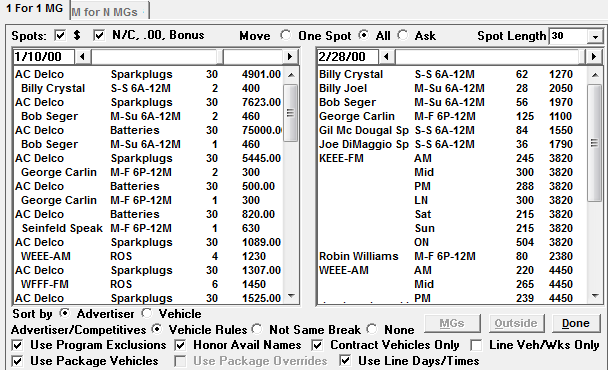
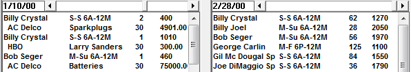
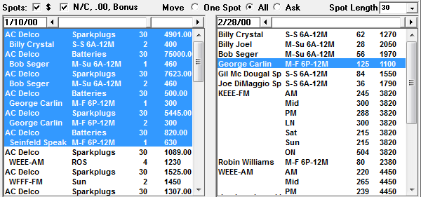

Move
The Move Screen is a tool that allows you to move multiple missed spots as Outsides or Makegoods. This screen allows you to be selective as to what spots you move and what scheduling rules to which the moves must adhere.

Screen Selectivity
Spots: $, N/C, .00, Bonus: Choose whether you want to see missed paid spots, no charge spots, or both.
Move One Spot/All/Ask: Decide whether you want to move spots individually, or all at once
- One Spot: Allows you to move spots individually.
- All: Moves as many spots as possible at once. (This is the system default.)
- Ask: When selected, you will be asked the number of spots to schedule for the advertiser and vehicles.
Spot Length: Select or verify the spot length from the upper right corner.
In the left scroll box, select the ‘from’ week that has the missed spots. Move backward and forward by clicking on the left and right arrows.
There will be a slight pause while the system gathers all vehicle and spot information for the week.
You will see all of the open avails for each vehicle that week. Line one shows the advertiser/product, spot length, spot cost. Line two shows the ordered vehicle, daypart, number of missed spots and audience value.
In the right scroll box, select the ‘to’ week, where you will be moving the missed spots. Move backward and forward by clicking on the left and right arrows.
The right side of the screen shows the inventory.
The vehicle, daypart, inventory (for the spot length selected) and the audience value of the daypart is shown.
Sort by Advertiser or Vehicle: The system defaults to sorting alphabetically by advertiser. The sorting method can be changed to vehicle by clicking the Vehicle radio button.

Advertiser/Competitives: This determines the scheduling rules to which the spot moves must adhere.
- Vehicle Rules: When the missed spots are scheduled whatever has been defined in Vehicle Options->Sales Screen will be followed.
- Not Same Break: If selected, missed spots will not schedule spots in the same break.
- None: If selected, same advertiser missed spots may be scheduled in the same break as existing scheduled spots.
Use Program Exclusions: Program exclusions are used to prevent spots from scheduling into certain programs such as controversial programming. If turned off, the spots are free to schedule into any programming for the vehicle.
Honor Avail Names: This will ensure missed spots ordered for a specific named avail book into that named avail. If unchecked, the spots can move to any avail type/name.
Contract Vehicles Only: This will only allow a spot to be moved onto a vehicle that is on the spot’s contract.
Line Veh/Wks Only: If checked, missed spots will remain in the same ordered vehicle, days and times.
Use Package vehicles: Package spots will only schedule into vehicles that are part of the package. If turned off, the spots will be free to schedule into any vehicle.
Use Package Overrides: Package spots will schedule into the days and times allowed by the package overrides defined. If this scheduling rule is turned off, the spots will be free to schedule into any daypart and any day. This option is only available if “Use Line Days/Times” is unchecked.
Use Line Days/Times: Controls whether missed spots can only book into the ordered day and time, or anywhere in the system. This option is only available if “Use Package Overrides” is unchecked.
Move as Makegood/Outside
You can move all or some of the missed spots displayed on the Spots Screen.

- In the missed information box select either the vehicle or the advertiser whose spots you want to schedule.
- Select the vehicle dayparts that you want to schedule the spots into.
- Change any scheduling overrides you want.
- MGs/Outside/Done: Choose whether to move the spots as Makegoods or Outsides
- MGs: to schedule them as makegoods.
- Outside: to schedule them as outside spots.
All spots that can be moved will be moved and your missed spot count and avails will decrease.